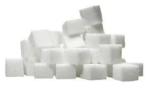

<div class="page">

  <div class="text-box">
    <h1><span class="highlight">Excess sugar in your diet can lead to a variety of complications.</span><br></h1>

    <p>
      This <strong>site</strong> will keep track of all my Diabetes related information and save and read data from a database<br>
      Under the <strong>My Diabetes Menu button</strong> contains a list with the following information:
    </p>

    <ul>
      <li>Display Sugar Readings </li>
      <li>Add and store new Sugar Readings </li>
      <li>Record and store BMI information </li>
      <li>Calculate Sugar Reading Averages </li>
      <li>Display and store Doctors Appointments </li>
      <li>List the type of medication taken and available</li>
    </ul>
    <p> The <strong>Information</strong> and <strong>Definitions</strong> links will:</p>
    <ul>
      <li>Display Diabetes Definitions </li>
      <li>Display Exercise and Diet Information </li>
      <li>Display Diabetes Advice and Explanations </li>
      <li>Display the effects of Diabetes</li>
    </ul>

    <p> The information on this site will help educate and keep diabetes under control.
    </p>
  </div>

<!-- <section class="picture">-->
<!--   <p>Excess sugar can lead to a variety of complications:<br>-->
<!--     See the <strong>Information</strong> Section for more details </p>-->

<!--   -->
<!-- </section>-->
<!--  <section class ="information">-->
<!--    <p>-->
<!--      This site is used to keep track of my sugar readings.<br>-->
<!--      it will contain a list of readings taken at regular intervals and other information like:</p>-->
<!--    <ul>-->
<!--      <li>Display Sugar Readings </li>-->
<!--      <li>Add new Sugar Readings </li>-->
<!--      <li>Calculate Sugar Reading Averages </li>-->
<!--      <li>Doctors Appointments </li>-->
<!--      <li>Diabetes Definitions </li>-->
<!--      <li>Diabetes Information </li>-->
<!--      <li>Diabetes Advice </li>-->
<!--    </ul>-->

<!--    <p> Hopefully the information on the site and keeping regular chacks<br>-->
<!--    will help keep my diabetes in check.</p>-->

<!--  </section>-->

</div>
